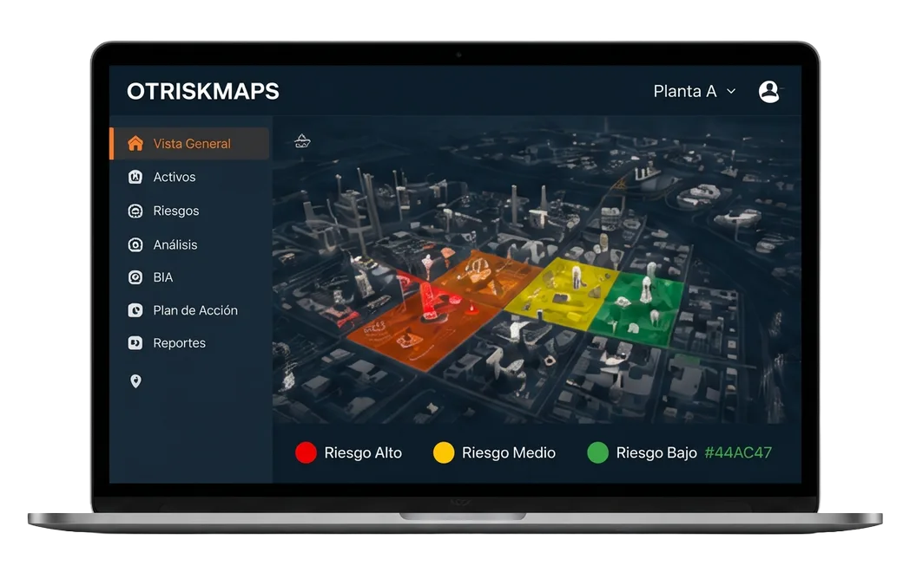

Soluciones
Ecosistema tecnológico para infraestructuras industriales
Combinamos el desarrollo de plataformas propias de inteligencia de riesgos con la integración de soluciones de clase mundial. Nuestro objetivo es otorgarle visibilidad absoluta, reducir las vulnerabilidades de su planta y garantizar que su operación crítica nunca se detenga.
Desarrollo exclusivo DyMCyber
OTRISKMAPS
Gestione la ciberseguridad de su entorno operacional desde un único panel especializado. OTRiskmap transforma la complejidad técnica en decisiones estratégicas, permitiéndole evaluar amenazas, visualizar su infraestructura y trazar un plan de mitigación accionable y medible.
Conocer más →
-
Assessment
Evaluación precisa del estado de madurez de su seguridad OT.
-
Mapas de riesgo OT
Visualización interactiva de activos, amenazas latentes y mapas de calor.
-
BIA
Cuantificación del riesgo técnico y su efecto directo en la continuidad del negocio.
-
Roadmap
Lanes de acción priorizados para una mejora continua y escalable.
Roadmap de implementación
Ruta de madurez en ciberseguridad industrial
Diseñamos una estrategia progresiva para blindar su operación. Comenzamos estableciendo los cimientos de visibilidad y cumplimiento, para luego evolucionar hacia la automatización, inteligencia de amenazas y certificación de estándares globales.
Año 1
- Assessment OT
- Inventario OT
- Risk Map OT
- Road Map OT
- Validación Jurídica y Legal
Año 2 en adelante
- Acceso Seguro (MFA, RSA, RBAC)
- RPA y Automatización
- Upgrade Hardware/ Software
- Vulnerabilidades OT
- Inteligencia de Amenazas
- Planes de mantenimiento
- Frameworks y Certificación (GRC)
- Compliance local e internacional
- Sistema de Gestión Ciberseguridad Industrial (SGCI)